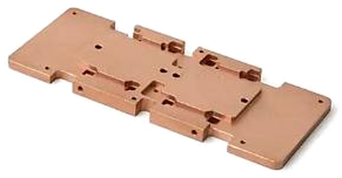
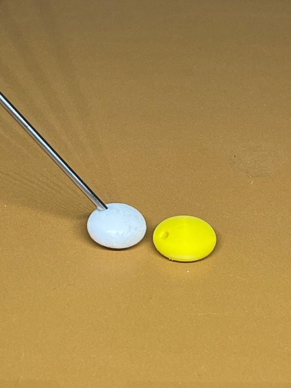
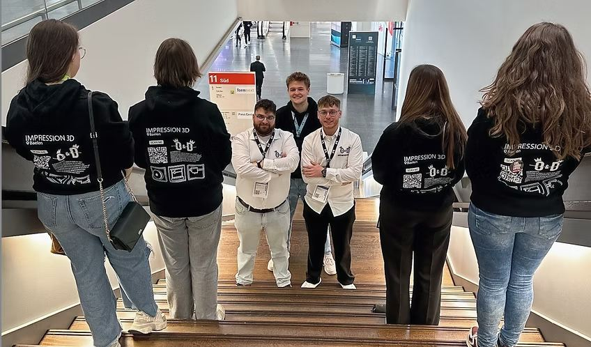

3D Printing& CNC machining
Prototypes, technical parts and small batches, from one-off to production. SLS, FDM and SLA 3D printing, CNC milling, 3D scanning and modelling: all done in our workshop. Quote within 24 h.


Our manufacturing processes
The process is chosen according to your specifications: strength, precision, surface finish, quantity, budget.
SLS
Robust functional nylon parts, no supports. Complex shapes and series.
Explore →Filament depositionFDM
Prototypes, tooling, large parts and multi-colour. From PLA to PEEK and ULTEM.
Explore →StereolithographySLA
Very high definition, smooth surfaces, fine details: scale models and appearance parts.
Explore →MillingCNC
Precise parts machined from solid: aluminium, brass, bronze, titanium, technical plastics.
Explore →Digitising3D scanning
Reverse engineering, reproduction of unavailable parts, shape inspection.
Explore →Laser engravingLaser
Personalisation, marking, numbering, cutting and signage.
Explore →Drilled flange Ø80Drag to rotate
The workshop's machines

Supermaker SLS1518
Supermaker SLS1518: compact industrial SLS printing, 150×150×180 mm build volume, PA11, PA12, TPU, CF, GF, integrated powder recycling.
Open the sheet →
Supermaker SLS3540 Pro
Supermaker SLS3540 Pro: large-format industrial SLS printing, 350×350×430 mm build volume, PA11, PA12, TPU, CF, GF, integrated powder recycling.
Open the sheet →
Bambu Lab H2C
The Bambu Lab H2C prints FDM in up to 24 colours, ideal for multi-colour and multi-material parts.
Open the sheet →
Bambu Lab X1C
Bambu Lab X1C: high-speed FDM printing, 256×256×256 mm build volume, ideal for series production and rapid prototyping.
Open the sheet →
Prusa Core One
Prusa Core One: industrial FDM printer for ASA, ABS, PC and PA, for your prototypes and small production runs.
Open the sheet →
Modix Big Meter
Very large 3D printing with the Modix Big Meter.
Open the sheet →They trusted us with their parts


Materials, from PLA to PEEK
29 detailed material sheets: properties, advantages, limitations and compatible machines.





From file to part
Send
STEP, STL or 3MF file, drawing, sketch… or the part to be scanned.
Analysis & quote
Instant with a 3D file, custom within 24 h.
Manufacturing
Process and material chosen according to your constraints.
Delivery
Shipping or pick-up at the Welkenraedt workshop.
Our projects

Polypropylene part for a speech therapist
Custom rehabilitation tool for a speech therapist, reproduced in polypropylene by 3D printing and adapted to patients' needs.
Open the sheet →
Mincer gear reproduced in 3D
Broken mincer gear reproduced in PLA: reverse engineered in 1 h, part ready in under 48 h.
Open the sheet →
Audi S3 parts reproduced in PAHT-CF
Reproduction of damaged Audi S3 parts in PAHT-CF and PLA: bumper grille and S3 logo covers.
Open the sheet →
Miniature rails for the Infrabel scale model
Miniature PLA rails 3D-printed for Infrabel's inauguration scale model.
Open the sheet →
Stool feet for holiday homes in Herve
40 cm stool feet in black PLA, custom-printed for Airbnb holiday homes in Herve: 24 h per part, free prototype.
Open the sheet →
Fence spike reproduced in ASA
Broken decorative fence spike, redesigned from photos and reprinted in UV-resistant ASA on a Bambu Lab X1C.
Open the sheet →Trade shows and events
We go out to meet industry: Euronaval for naval and defence, Formnext for additive manufacturing, Batibouw for construction.




O&D Impression 3D in 8 answers
The key facts about our workshop, at a glance.
Who are we?
O&D Impression 3D is a Belgian manufacturing workshop founded in 2021 by Owen Schimmenti and Donovan Waucomont.
Where is our workshop?
Rue Trois Bourdons 52E, 4840 Welkenraedt, in the province of Liège. We work for Liège, Verviers, Eupen, Spa, Huy, Seraing and the whole of Belgium.
What do we make?
SLS, FDM and SLA 3D printing, CNC machining, 3D scanning, 3D modelling and laser engraving: prototypes, technical parts, replacement parts and small production runs.
Which machines do we work with?
11 machines in our workshop: Supermaker SLS1518, Supermaker SLS3540 Pro, Bambu Lab H2C, Bambu Lab X1C, Prusa Core One, Modix Big Meter, INTAMSYS Funmat HT, Anycubic Photon M7 Max, ToolDance X1, Scanner 3DeVOK MT, xTool F1.
Which materials do we use?
29 documented materials: nylon PA12 and PA11, TPU, PLA, PETG, ABS, ASA, PEEK, PEKK, ULTEM, aluminium, brass, copper, bronze, titanium and engineering plastics.
How to get a quote?
Instant online quote from a 3D file (STL, STEP, 3MF), or a custom quote within 24 h.
Who do we work for?
Companies, public bodies and creators: for example Walibi, Infrabel, the City of Spa and Lx Cars.
How to contact us?
By phone on +32 471 68 66 53, by e-mail at o.d3dindustrie@gmail.com or via the contact form.
Prepare your project
Quiz: which technology?
A few questions to find out which process suits your part.
Open →ToolInstant quote
Drop your STL, choose the material: instant estimate.
Open →ToolMaterial comparison
PLA vs PETG, PEEK vs PEKK vs Ultem, FDM vs SLS vs SLA…
Open →ToolMaterials & technologies guide
The complete guide to choosing process and material.
Open →A part to make?
Send your 3D file or describe what you need: instant quote with a file, custom quote within 24 h.